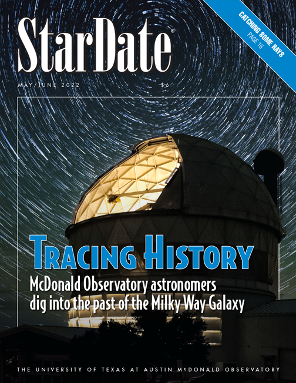
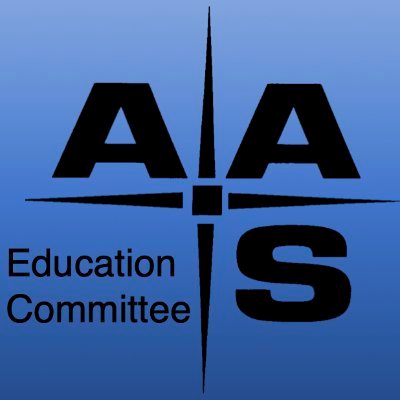

I currently serve on the executive committee for the American Physical Society’s Forum on Engaging the Public. The team is made up of people who believe that telling the world about physics (and astronomy!) is just as important as the research itself.
Allowing people of all racial, gender, and socioeconomic backgrounds to not only be exposed but be a part of STEM is at the forefront of my work. During the summer of 2022, I was an astronomy intern for the Smithsonian National Air and Space Museum (NASM) in Washington D.C. where I worked under the director of education and visitor services. At NASM, I developed hands-on activities to explain dark energy to visitors of the museum and worked on a team to develop a new astronomy citizen science exhibit that will be in the museum in 2025. This exhibit will have the potential to impact the Air and Space Museum’s millions of visitors every year.
 